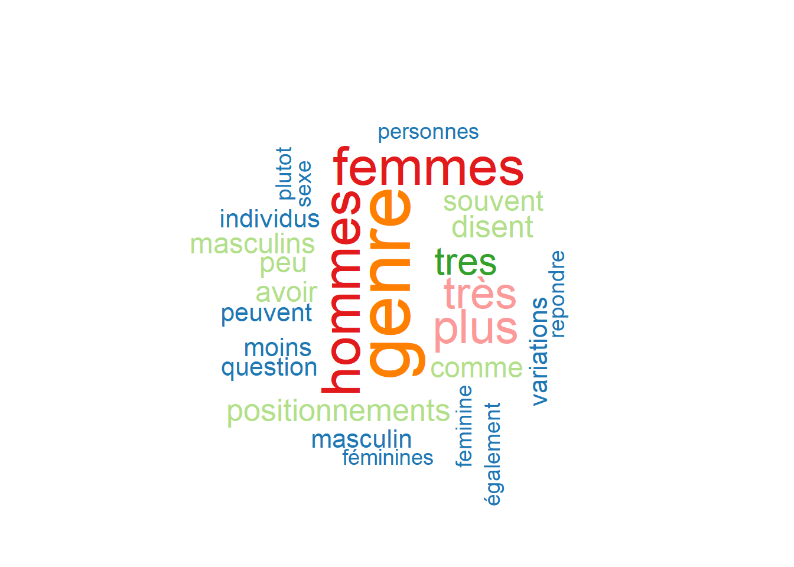

Comme dans tout bon code R il est nécessaire au début d’installer (une fois sur un ordinateur): (dans le terminal de commande ) install.packages(“tm”) # pour le text mining install.packages(“SnowballC”) # pour le text stemming install.packages(“wordcloud”) # générateur de word-cloud install.packages(“RColorBrewer”) # Palettes de couleurs les packages recquis pour le code et de charger (à chaque fois ) les librairies requisent pour le code.
# ---- library ----library("tm") # pour le text mining
Warning: le package 'tm' a été compilé avec la version R 4.2.3
Le chargement a nécessité le package : NLP
library("SnowballC") # pour le text stemming
Warning: le package 'SnowballC' a été compilé avec la version R 4.2.3
library("wordcloud") # générateur de word-cloud
Warning: le package 'wordcloud' a été compilé avec la version R 4.2.3
Le chargement a nécessité le package : RColorBrewer
library("RColorBrewer") # pour charger des couleurs dans le nuage de mot
Le text-mining (ou fouille de texte) est une technique d’analyse de données qui consiste à extraire des informations significatives à partir de données textuelles non structurées telles que des documents, des e-mails, des pages web, des tweets, etc.
Le stemming est une technique de traitement automatique du langage naturel (TALN) qui consiste à réduire les mots à leur forme racine ou à leur base lexicale, en éliminant les suffixes ou les terminaisons des mots. Par exemple, le stemming pourrait transformer les mots “manger”, “mangeais” et “mangé” en leur forme racine “mang”.
J’ai choisis une publication de Mathieu Trachman datant de 2022 intitulé “Très masculin, pas très féminine. Les variations sociales du genre”, Population et Sociétés: 1-4, pour illustrer mon exemple.
# Lire le fichier textefilePath <-"genre.txt"text <-readLines(filePath)
Warning in readLines(filePath): ligne finale incomplète trouvée dans
'genre.txt'
# Charger les données comme un corpusdocs <-Corpus(VectorSource(text))
Par la suite, il faut transformer un peu le texte pour ne gardez que l’essentiel, le coeur du sujet. Il faut donc supprimer les “stopword” (le,la,une,des,…).
# ---- Transofrmation du texte ----toSpace <-content_transformer(function (x , pattern ) gsub(pattern, " ", x)) # Convertir le texte en minusculedocs <-tm_map(docs, content_transformer(tolower))
Warning in tm_map.SimpleCorpus(docs, content_transformer(tolower)):
transformation drops documents
# Supprimer les mots vides anglaisdocs <-tm_map(docs, removeWords, stopwords("fr"))
Warning in tm_map.SimpleCorpus(docs, removeWords, stopwords("fr")):
transformation drops documents
# Supprimer votre propre liste de mots non désirésdocs <-tm_map(docs, removeWords, c("blabla1", "'", "chez"))
Warning in tm_map.SimpleCorpus(docs, removeWords, c("blabla1", "'", "chez")):
transformation drops documents
# Supprimer les ponctuationsdocs <-tm_map(docs, removePunctuation)
Warning in tm_map.SimpleCorpus(docs, removePunctuation): transformation drops
documents
# Supprimer les espaces vides supplémentairesdocs <-tm_map(docs, stripWhitespace)
Warning in tm_map.SimpleCorpus(docs, stripWhitespace): transformation drops
documents
inspect(docs) #inspecter le document
S’il on veut supprimer des nombres, on utilise la syntaxe : “docs <- tm_map(docs, removeNumbers)”
On réalise ensuite une table de fréquence d’apparition des mots
::: {.cell}
# table de fréquence de mot (voir table d'occurence)dtm <-TermDocumentMatrix(docs)m <-as.matrix(dtm)v <-sort(rowSums(m),decreasing=TRUE)d <-data.frame(word =names(v),freq=v)head(d, 12) # affiche les 12 mots avec les plus grosses fréquences. set.seed(1234)wordcloud(words = d$word, freq = d$freq, min.freq =4,max.words=200, random.order=FALSE, rot.per=0.35, colors=brewer.pal(8, "Paired")) #réalisation du nuage de mots.
::: {.cell-output-display}  :::
# On pourrait faire quelque chose de beaucoup plus neutre en terme de couleur avec la commande :set.seed(1234)wordcloud(words = d$word, freq = d$freq, min.freq =4,max.words=200, random.order=FALSE, rot.per=0.35, colors="black")
::: {.cell-output-display} ::: :::
C’est quoi le set.seed(1234) ? Lorsque vous utilisez une graine aléatoire (le set.seed(1234)), cela garantit que les résultats de votre analyse seront les mêmes à chaque fois que vous exécutez le code. Cela est particulièrement important lorsque vous travaillez avec des fonctions qui impliquent une certaine forme d’aléatoire, comme la génération de nuages de mots.
Ainsi, si vous utilisez la même graine aléatoire (par exemple, 1234) dans votre code chaque fois que vous exécutez l’analyse, vous obtiendrez toujours les mêmes résultats, ce qui facilite la reproductibilité de votre analyse. Sans fixer la graine aléatoire, la génération du nuage de mots peut varier à chaque exécution, car les fonctions qui génèrent le nuage de mots utilisent généralement des algorithmes aléatoires pour placer les mots dans l’espace et choisir les couleurs. Cela signifie que chaque fois que vous exécutez le code, vous obtiendrez un nuage de mots différent, même si les données d’entrée sont les mêmes.
---title: "Nuage de mot (Tm)"toc-title: ""categories: - R - VSCodeauthor: "COTTET Coralie"affiliations: INEDdate: 06/06/2023---Comme dans tout bon code R il est nécessaire au début d'installer (une fois sur un ordinateur): (dans le terminal de commande )install.packages("tm") # pour le text mininginstall.packages("SnowballC") # pour le text stemminginstall.packages("wordcloud") # générateur de word-cloud install.packages("RColorBrewer") # Palettes de couleursles packages recquis pour le code et de charger (à chaque fois ) les librairies requisent pour le code.```{r results='hide'}# ---- library ----library("tm") # pour le text mininglibrary("SnowballC") # pour le text stemminglibrary("wordcloud") # générateur de word-cloud library("RColorBrewer") # pour charger des couleurs dans le nuage de mot```Le _text-mining_ (ou fouille de texte) est une technique d'analyse de données qui consiste à extraire des informations significatives à partir de données textuelles non structurées telles que des documents, des e-mails, des pages web, des tweets, etc.Le _stemming_ est une technique de traitement automatique du langage naturel (TALN) qui consiste à réduire les mots à leur forme racine ou à leur base lexicale, en éliminant les suffixes ou les terminaisons des mots. Par exemple, le stemming pourrait transformer les mots "manger", "mangeais" et "mangé" en leur forme racine "mang".J'ai choisis une publication de Mathieu Trachman datant de 2022 intitulé "Très masculin, pas très féminine. Les variations sociales du genre",Population et Sociétés: 1-4, pour illustrer mon exemple. ```{r results='hide'}# Lire le fichier textefilePath <-"genre.txt"text <-readLines(filePath)# Charger les données comme un corpusdocs <-Corpus(VectorSource(text))```Par la suite, il faut transformer un peu le texte pour ne gardez que l'essentiel, le coeur du sujet. Il faut donc supprimer les "stopword" (le,la,une,des,...).```{r results='hide'}# ---- Transofrmation du texte ----toSpace <-content_transformer(function (x , pattern ) gsub(pattern, " ", x)) # Convertir le texte en minusculedocs <-tm_map(docs, content_transformer(tolower)) # Supprimer les mots vides anglaisdocs <-tm_map(docs, removeWords, stopwords("fr"))# Supprimer votre propre liste de mots non désirésdocs <-tm_map(docs, removeWords, c("blabla1", "'", "chez")) # Supprimer les ponctuationsdocs <-tm_map(docs, removePunctuation)# Supprimer les espaces vides supplémentairesdocs <-tm_map(docs, stripWhitespace)inspect(docs) #inspecter le document```S'il on veut supprimer des nombres, on utilise la syntaxe : "docs <- tm_map(docs, removeNumbers)"On réalise ensuite une table de fréquence d'apparition des mots```{r results='hide'}# table de fréquence de mot (voir table d'occurence)dtm <-TermDocumentMatrix(docs)m <-as.matrix(dtm)v <-sort(rowSums(m),decreasing=TRUE)d <-data.frame(word =names(v),freq=v)head(d, 12) # affiche les 12 mots avec les plus grosses fréquences. set.seed(1234)wordcloud(words = d$word, freq = d$freq, min.freq =4,max.words=200, random.order=FALSE, rot.per=0.35, colors=brewer.pal(8, "Paired")) #réalisation du nuage de mots.# On pourrait faire quelque chose de beaucoup plus neutre en terme de couleur avec la commande :set.seed(1234)wordcloud(words = d$word, freq = d$freq, min.freq =4,max.words=200, random.order=FALSE, rot.per=0.35, colors="black")```C'est quoi le __set.seed(1234)__ ?Lorsque vous utilisez une graine aléatoire (le set.seed(1234)), cela garantit que les résultats de votre analyse seront les mêmes à chaque fois que vous exécutez le code. Cela est particulièrement important lorsque vous travaillez avec des fonctions qui impliquent une certaine forme d'aléatoire, comme la génération de nuages de mots.Ainsi, si vous utilisez la même graine aléatoire (par exemple, 1234) dans votre code chaque fois que vous exécutez l'analyse, vous obtiendrez toujours les mêmes résultats, ce qui facilite la reproductibilité de votre analyse. Sans fixer la graine aléatoire, la génération du nuage de mots peut varier à chaque exécution, car les fonctions qui génèrent le nuage de mots utilisent généralement des algorithmes aléatoires pour placer les mots dans l'espace et choisir les couleurs. Cela signifie que chaque fois que vous exécutez le code, vous obtiendrez un nuage de mots différent, même si les données d'entrée sont les mêmes.Pour en apprendre plus sur la constrcution des images de mots :<http://www.sthda.com/french/wiki/text-mining-et-nuage-de-mots-avec-le-logiciel-r-5-etapes-simples-a-savoir>